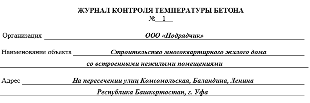

Журнал контроля температуры бетона/температурный лист
Начнем урок с небольшого погружения в термины.
Какие есть методы зимнего бетонирования
Смотрите в презентации ниже основные методы зимнего бетонирования и их содержание.
Встроенный материал · штатный PDF-экспорт
Открыть сохранённый PDF · Исходная страница
Текст и изображения исходной страницы
Основные методы зимнего бетонирования:

Термос
Прогрев бетона нагревательными проводами
Электропрогрев
Обогрев поверхностными нагревателями
Предварительный разогрев бетонной смеси
Инфракрасный обогрев
Индукционный обогрев
Противоморозные добавки
Конвективный обогрев
Основные методы зимнего бетонирования:
Термос
Прогрев бетона нагревательными проводами
Электропрогрев
Обогрев поверхностными нагревателями
Предварительный разогрев бетонной смеси
Инфракрасный обогрев
Индукционный обогрев
Противоморозные добавки
Конвективный обогрев
Форма журнала контроля температуры бетона в действующих нормативных документах отсутствует. За основу для рекомендуемой формы применяйте форму журнала ухода за бетоном (приложение 8 СНиП III-15-76 (не действующий)).
Как заполнить журнал контроля температуры бетона
Порядок заполнения титульного и температурного листа

После титульного листа для каждой конструкции заполните температурный лист. В некоторых случаях температурный лист у вас могут потребовать как отдельный документ.
Источник и ограничения: для просмотра требуется сеть и доступ к внешней площадке.
Теперь перейдем к основной части журнала.
Порядок заполнения таблицы температурного листа
Таблица температурного листа может быть видоизменена в соответствии с количеством точек для замеров температуры (скважин). В примере ниже их пять.
Количество точек для измерения температуры должно быть не менее одной (п. 10.23.4 СП 435.1325800.2018):
- для балок/колонн на каждые 3-6 п. м;
- для перекрытий на 10-12 м2 площади;
- для фундаментной плиты на 30 м2 площади;
- для бетонных подготовок, полов, днищ на 10 м2 площади.
Теперь перейдем к правилам заполнения основной части журнала – таблицы температурного листа. Жмите на интерактивные точки, чтобы увидеть, как правильно заполнять отдельные столбцы таблицы.
Источник и ограничения: для просмотра требуется сеть и доступ к внешней площадке.
Отлично. Давайте закрепим полученный материал тестом. Вы сможете проверить, хорошо ли у вас поулчается определять модуль поверхности плиты, методы зимнего бетонирования и другие вопросы из урока. После тренажера приступайте к выполнению домашнего задания.
{kind=link}
{kind=link}